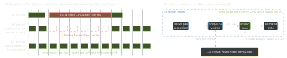

react-native · folio
In one line: Smooth animation means computing each frame on the UI thread, so a busy JS
thread cannot drop it. Animated’s useNativeDriver does this for a pre-declared
animation of transform/opacity; Reanimated runs your own worklets on the
UI thread; Gesture Handler recognises touches natively and feeds them. iOS analogue:
Core Animation keeps running while your code blocks.
Download PDF Print view LaTeX source


Animated (core)
Animated.Value(held inuseRef) ·ValueXY; driverstiming(duration + easing),spring(physical, interruptible),decay(velocity); composesequence/parallel/stagger/loop.interpolate({inputRange, outputRange,extrapolate:'clamp'})— one value drives many props (rotation, colour, opacity).useNativeDriver: trueserialises the animation graph to native once; frames then run on UI. Only non-layout props:transform,opacity. Notwidth,height,top,margin,flex— they need Yoga layout every frame.Animated.event(..., {useNativeDriver:true})binds scroll offset natively — the classic collapsing header.- LayoutAnimation:
configureNext(Presets.easeInEaseOut)before a state change animates the next layout — cheap, global, no gestures, not interruptible. Old-arch Android:UIManager.setLayoutAnimationEnabledExperimental(true).
Reanimated — how it wins
- A worklet (
'worklet'directive, added by the Babel plugin for hook callbacks) is copied into a second JS runtime on the UI thread; captured variables are copied, not shared. useSharedValue— readable/writable from both runtimes via.value; writing it does not re-render React.useAnimatedStyle(fn)re-runs on UI when a shared value it reads changes and patches the native view — any prop, layout included.withTiming,withSpring,withDecay,withSequence,withRepeat,withDelay;useDerivedValue;useAnimatedScrollHandler;cancelAnimation.scheduleOnRN(fn, ...args)UI → JS;scheduleOnUI(fn, ...args)JS → UI (react-native-worklets; 3.xrunOnJS(fn)(args)/runOnUIare deprecated re-exports in 4). Async hops — at the end of a gesture, never per frame.- Layout animations:
entering={FadeIn},exiting={FadeOut},layout={LinearTransition}onAnimated.View. - Reanimated 4 requires the New Architecture; worklets moved to
react-native-worklets.
Example — swipe card, springs back
const x = useSharedValue(0);
const pan = usePanGesture({ // RNGH 3
onUpdate: (e) => { x.value = e.translationX; }, // UI
onDeactivate: (e) => {
if (Math.abs(e.translationX) > 120) scheduleOnRN(dismiss);
else x.value = withSpring(0, { velocity: e.velocityX });
},
});
const style = useAnimatedStyle(() => ({
transform: [{ translateX: x.value }],
opacity: interpolate(Math.abs(x.value), [0, 200], [1, 0.3],
Extrapolation.CLAMP),
}));
return <GestureDetector gesture={pan}>
<Animated.View style={[styles.card, style]} /></GestureDetector>;Gesture Handler 3 (hooks; 2.x still maintained)
- Native recognisers (UIGestureRecognizer on iOS), replacing the JS responder system — they work while JS is busy. Root:
GestureHandlerRootView. - A config object per hook:
usePanGesture({…}),useTapGesture,useLongPressGesture,usePinchGesture,useRotationGesture,useFlingGesture→<GestureDetector gesture={g}>. CallbacksonBegin·onActivate·onUpdate·onDeactivate(v2Gesture.Pan().onStart/.onEnd;onChangefolded intoonUpdate). useSimultaneousGestures(pinch, rotate)— both active ·useExclusiveGestures(doubleTap, tap)— first that succeeds, in order ·useCompetingGestures(v2Race). Across components:requireToFail(UIKitrequire(toFail:)),simultaneousWith,block.- Hook-API callbacks run on the UI thread by default (Reanimated integration);
runOnJS: truemoves them to JS.
Traps
- “Native driver makes everything smooth” — not layout props, and a JS
onPress/setStateis still late. - Calling a plain JS function from a worklet without
scheduleOnRNcrashes; readingsv.valuein render gives a stale value.scheduleOnRN(setState, v)per frame rebuilds the JS bottleneck. - Animating
width/heightcosts a layout pass per frame even on UI — prefertransform: scalewhere the look allows.
Remember
Frames on UI, decisions on JS: gesture → worklet → shared value → style; cross to JS only at the end.